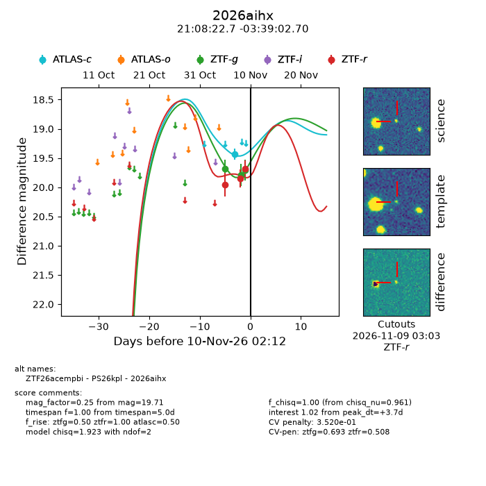
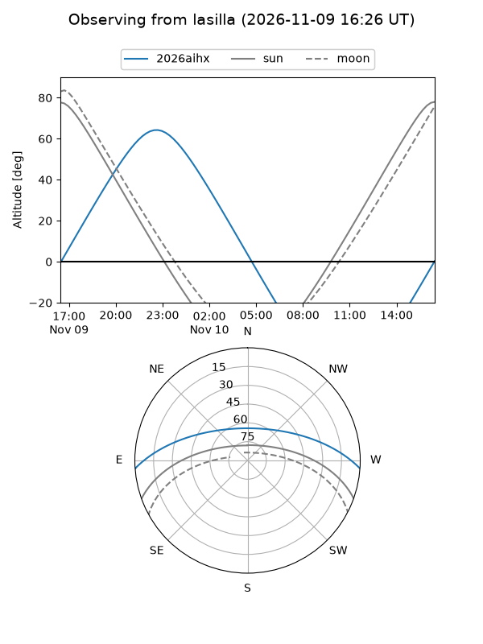
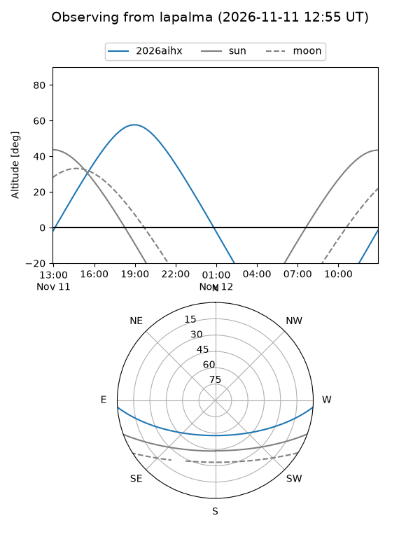
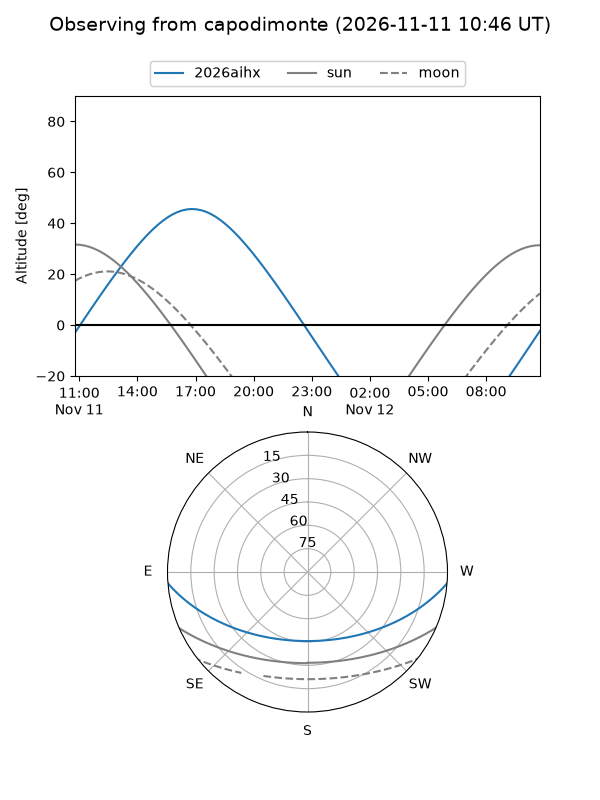
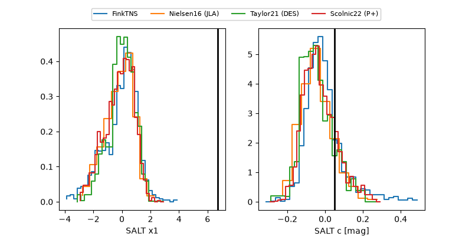

2026aihx
Target 2026aihx at 2026-11-10 02:14
Aliases and brokers:
FINK-ZTF: ztf.fink-portal.org/ZTF26acempbi
Lasair-ZTF: lasair-ztf.lsst.ac.uk/objects/ZTF26acempbi
ALeRCE-ZTF: alerce.online/object/ZTF26acempbi
YSE-PZ: ziggy.ucolick.org/yse/transient_detail/2026aihx
TNS name: wis-tns.org/object/2026aihx
Direct TNS query: direct search
alt names
ZTF26acempbi (ztf,fink_ztf)
2026aihx (tns,yse)
PS26kpl (panstarrs)
Coordinates:
equatorial (ra, dec) = 317.0947,-3.65075
equatorial (HMS+DMS) = 21:08:22.74,-03:39:02.70
galactic (l, b) = (46.5149,-31.91893)
Flags:
likely cv: !!
CV pen: 0.35202655131457594
peak dt: +3.7
Photometry:
last atlasc=19.44, ztfg=19.71, ztfr=19.68
1 atlasc, 3 ztfg, 3 ztfr detections
Lightcurve

Visibility



Additional plots
